LinkedIn Profile Branding for the Six Senders
Every image and every text block exactly as it goes on each profile. Approve, or mark what to change. The registration link stays {{domains.funnel_domain}} until the pages are live.
What You Approve
- 6 covers (1584 x 396) and 6 Featured images (1200 x 627); the only face is your Kie.ai avatar on the Featured images, as host.
- Per person: headline, About, Featured title and description, Experience title and description.
- Experience titles for Bhaskar, Nelbin, Aquila, Bharath and Ben are proposed from their roles.
| Characters | Headline (220) | About (2,600) | Featured title (60) | Featured description | Experience (2,000) |
|---|---|---|---|---|---|
| Adi | 168 | 1,330 | 50 | 175 | 1,016 |
| Bhaskar | 149 | 1,142 | 41 | 170 | 1,081 |
| Nelbin | 163 | 978 | 45 | 162 | 1,065 |
| Aquila | 160 | 1,085 | 35 | 185 | 1,055 |
| Bharath | 193 | 938 | 39 | 162 | 1,058 |
| Ben | 171 | 873 | 47 | 186 | 1,061 |
Adi Owner and host
https://www.linkedin.com/in/adisuja/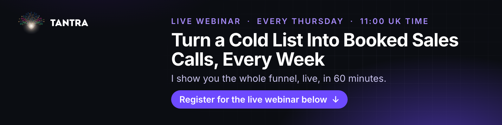
Featured
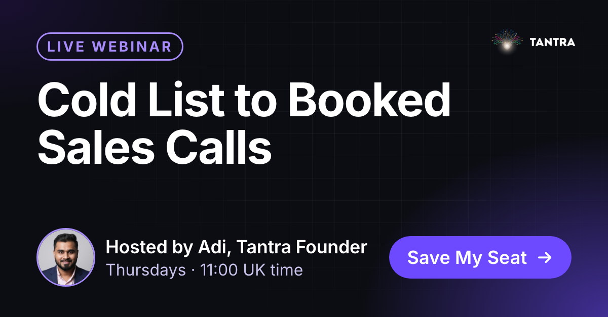
A live 60-minute webinar with me, every Thursday at 11:00 UK time. The invites, reminders and follow-ups that fill a sales calendar, and the parts AI now runs. Save your seat.
https://webinar.sellwithtantra.com/?utm_source=linkedin&utm_medium=profile&utm_campaign=enterprise-webinar&utm_content=adi-featuredAbout
Experience
Bhaskar CMO
https://www.linkedin.com/in/bhaskar-dev/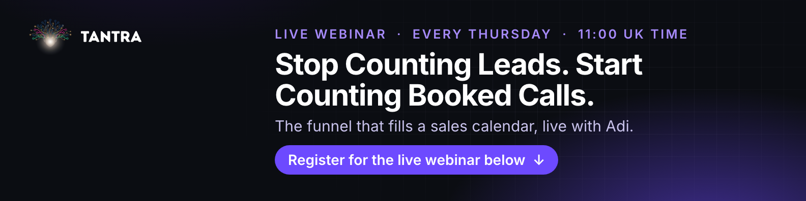
Featured
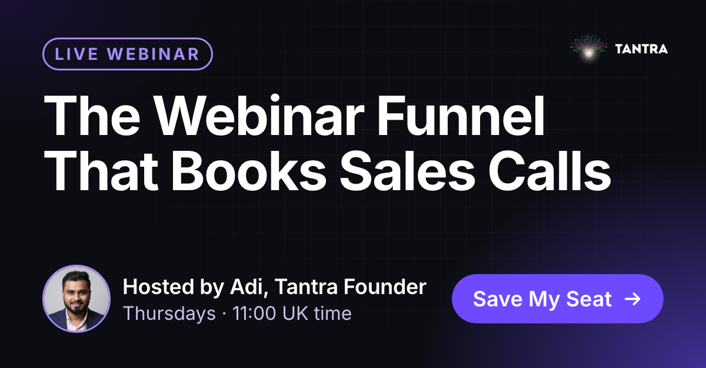
A live 60-minute webinar with Adi, founder of Tantra, every Thursday at 11:00 UK time. Which invites, pages and reminders actually turn into booked calls. Save your seat.
https://webinar.sellwithtantra.com/?utm_source=linkedin&utm_medium=profile&utm_campaign=enterprise-webinar&utm_content=bhaskar-featuredAbout
Experience
Nelbin Operations
https://www.linkedin.com/in/nelbin-xav/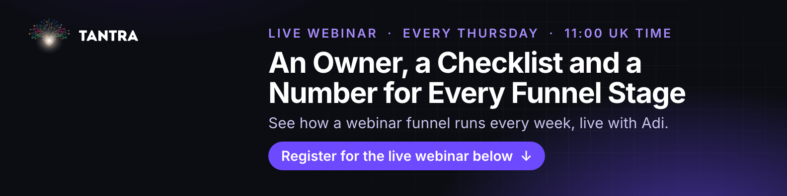
Featured
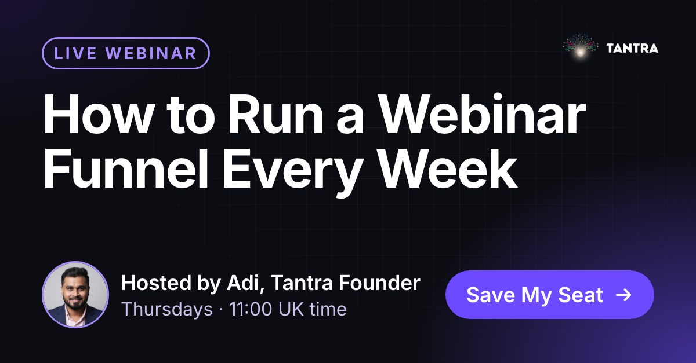
A live 60-minute webinar with Adi, founder of Tantra, every Thursday at 11:00 UK time. The weekly rhythm behind a funnel that keeps booking calls. Save your seat.
https://webinar.sellwithtantra.com/?utm_source=linkedin&utm_medium=profile&utm_campaign=enterprise-webinar&utm_content=nelbin-featuredAbout
Experience
Aquila Automation
https://www.linkedin.com/in/aquilaeldho/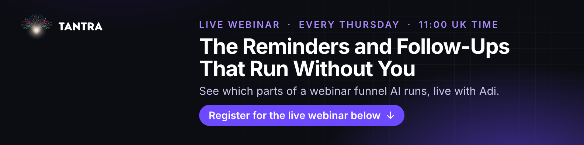
Featured
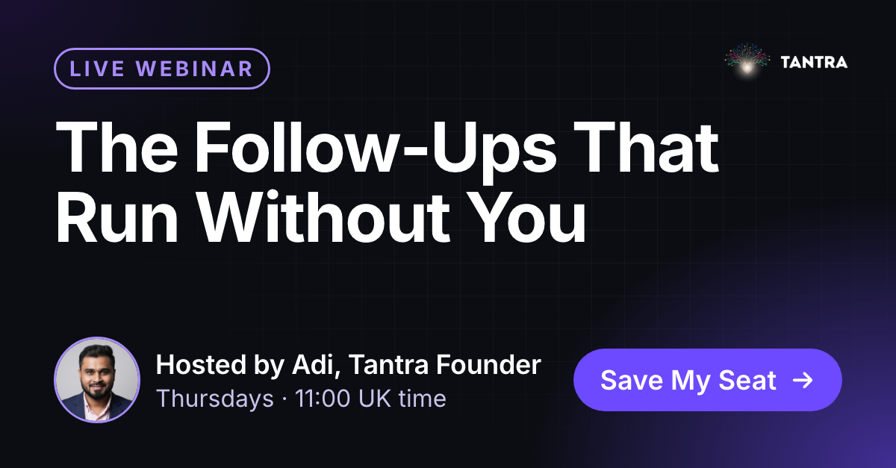
A live 60-minute webinar with Adi, founder of Tantra, every Thursday at 11:00 UK time. The reminders, follow-ups and handoffs AI runs, and the parts that still need you. Save your seat.
https://webinar.sellwithtantra.com/?utm_source=linkedin&utm_medium=profile&utm_campaign=enterprise-webinar&utm_content=aquila-featuredAbout
Experience
Bharath CTO
https://www.linkedin.com/in/bkp31415/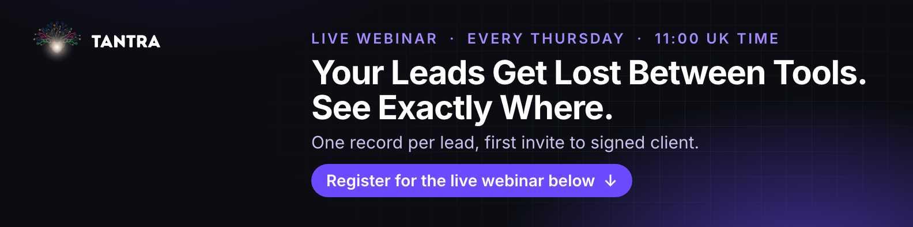
Featured
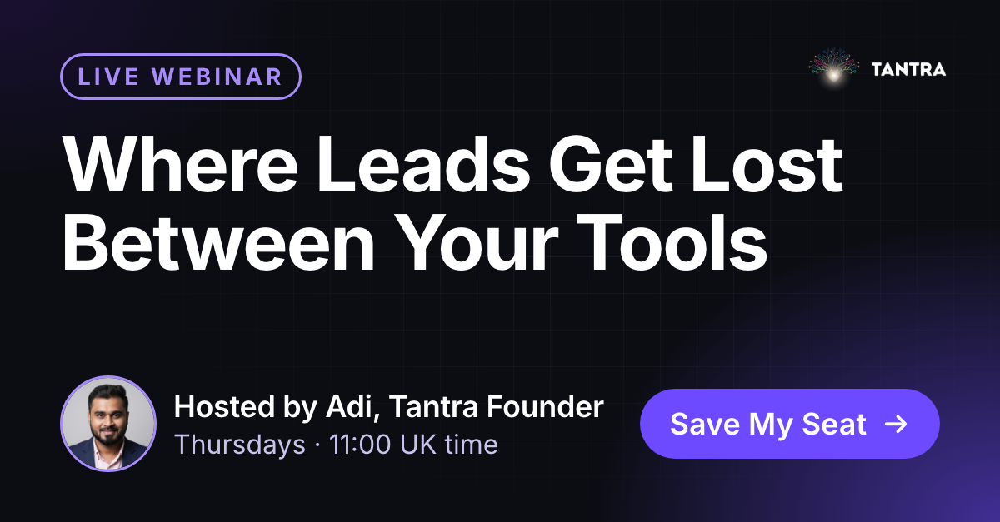
A live 60-minute webinar with Adi, founder of Tantra, every Thursday at 11:00 UK time. How every form, booking and webinar event lands in one CRM. Save your seat.
https://webinar.sellwithtantra.com/?utm_source=linkedin&utm_medium=profile&utm_campaign=enterprise-webinar&utm_content=bharath-featuredAbout
Experience
Ben Development
https://www.linkedin.com/in/ben-basil-tomy-5533b9218/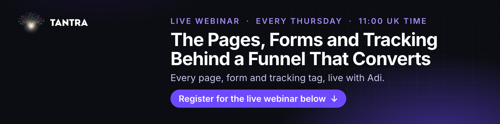
Featured
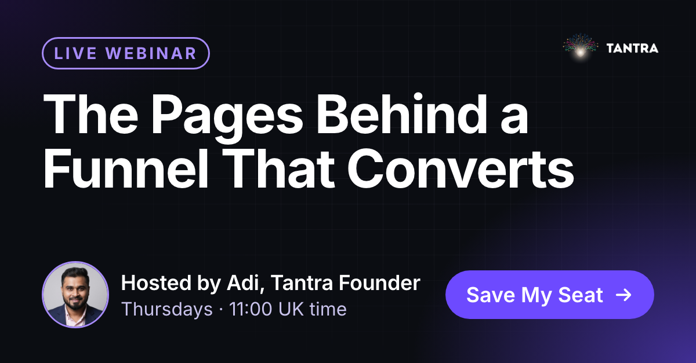
A live 60-minute webinar with Adi, founder of Tantra, every Thursday at 11:00 UK time. The registration, thank-you and replay pages, and the tests that decide what stays. Save your seat.
https://webinar.sellwithtantra.com/?utm_source=linkedin&utm_medium=profile&utm_campaign=enterprise-webinar&utm_content=ben-featured